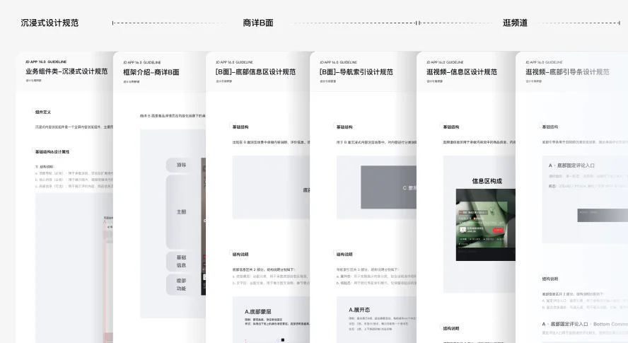
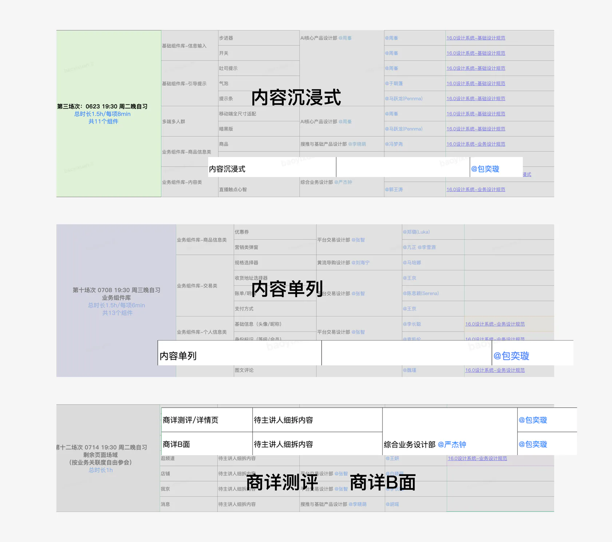
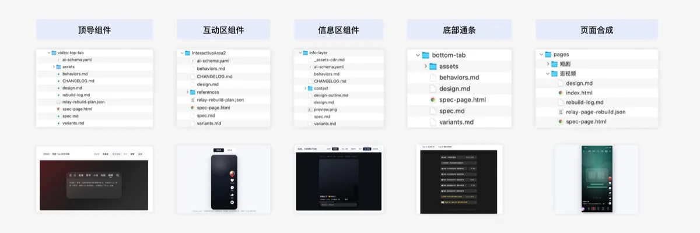
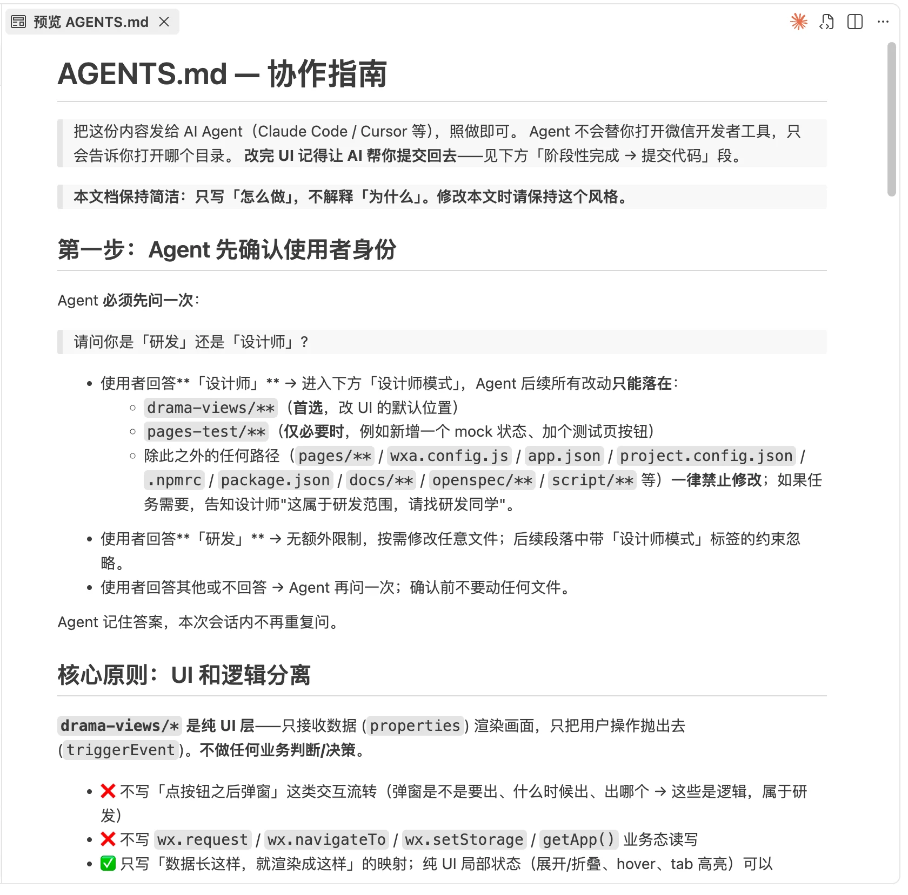
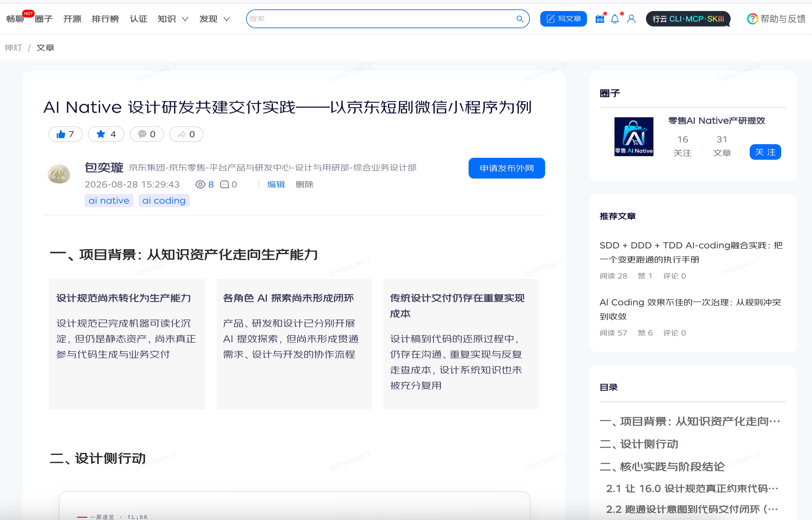

组件规范建设
01

实习项目复盘 · JD Design Wiki
以真实业务验证 Design Wiki 的可用性：跑通从设计意图到可运行交付的闭环，并将验证方法沉淀为可复用的团队流程。

前置｜建立设计规则
通过参与 16.0 内容场域组件的盘点、收敛、封装与验证，逐步建立对内容业务与设计规则的系统认知，为后续 AI Native 探索奠定基础
盘点 → 聚类 → 收敛 → 封装 → 验证


探索与契机
在搭建组件库的过程中发现组件封装、组件标注等高频重复操作，没有只停留在手工执行，而是尝试制作了一些提效小工具来反哺 16.0 组件库生产


02/为什么做
Skill 尝试是契机，持续、高频探索后，我与相关团队建立联系，方向契合。借此机会，我才逐步参与到 Design Wiki 的建设中
Skill 能力还没经过真实业务场景验证
普通设计师不知如何使用这些 Skill
基于负责的视频场域组件建设，我从真实组件验证入手，探索 Design Wiki 如何从“机器可读”进一步走向“业务可用”，并最终进入真实设计与研发交付流程。
03/我的贡献
角色定位：真实业务验证者、沉淀者和共建推动者
用视频场域的复杂业务验证并推动 Skill 迭代。
把个人经验沉淀成团队 SOP，降低使用门槛。
主动联合研发，把 Design Wiki 接入真实工程，验证设计规则能否直接约束代码交付。
04/如何验证
基于比较熟悉、结构也比较复杂的视频场域，先识别页面结构，再逐层判断哪些规则应该进入全局规范、哪些能力应该沉淀为可复用组件。

只描述页面区块顺序与组件编排关系
组织具备独立业务语义的内容区块
沉淀可组合的最小视觉能力
统一所有上层结构依赖的基础规则
跨页面重复出现 → 进入组件库
仅服务当前场景 → 作为模块或私有 Assets 管理
Relay MCP 读取结构、token、组件层级。
预检层级、组件边界与缺失信息。
按组件边界生成结构化文档包。
用文档还原页面，检验规范可执行性。
修正规则并回写，进入 Design Wiki 复用。
05/怎么解决
建立清晰的分层思维，让知识从底层规则逐步向上组合。下层决定上层：每一层只描述自己该负责的内容。前面的规则越准确，AI 在页面层需要理解和猜测的内容就越少。
调用并编排组件，不重复描述组件规则
pages/*.md定义结构、变体、状态与交互
components/*.md图标、蒙层、文字等最小视觉能力
visuals/*.md颜色、字体、间距等全局基础规则
tokens/*.md跟随组件管理，避免污染全局资产库
assets/06/如何迭代
反复运行、测试 Skill，将流程中异常情况收敛为可复现问题，并协同推动 Skill 优化。
问题一

问题二

07/如何沉淀
描述从 Relay 设计稿中抽取出来的设计事实，包括页面结构、模块层级、布局关系、设计 token、组件组成和视觉语义。
用来回答：设计稿里到底有什么？把设计信息转译成开发可执行的实现规范，明确尺寸、间距、颜色、字体、组件规则和页面还原要求。
用来回答：开发应该如何实现？记录组件或页面的交互行为，例如 hover、click、loading、empty、error、disabled 等状态下的响应方式。
用来回答：用户操作后会发生什么？沉淀组件或模块的不同形态与状态变体，帮助后续复用、扩展和对齐多场景下的视觉差异。
用来回答：这个组件有哪些版本？提供给 AI 或自动化流程读取的结构化 schema，用字段化方式描述组件、token、模块和校验规则。
用来回答：机器如何稳定理解这份设计？集中管理从设计稿导出的图片、图标、截图和其他静态资源，保证 HTML 预览与实现过程有可追溯的素材来源。
用来回答：图片和图标资源在哪里？记录每轮生成、人工修正、验证反馈和结构调整，让设计文档的演进过程可以被复盘和追踪。
用来回答：这份文档经历了哪些变化？第一阶段成果
从组件规范沉淀、Skill 辅助生产，到 Design.md、Spec 与 HTML 产物生成，完成一条可验证、可复用的设计规则生产链路。

Contribution
基于真实业务组件，连续验证 token、组件、页面到 HTML 预览的完整流程。
通过多个真实组件测试，暴露并反馈 Skill 在结构、规范、资源和页面还原上的问题，推动已有能力进一步优化。
从第一次使用者视角出发的完整上手指南
在反复验证过程中，越来越多设计同学开始询问 AI、Skill 等相关问题。基于多轮实践，输出教程文档，参与内部 C2 宣讲和答疑，帮助设计同学快速上手，降低团队使用门槛。
08 / 真实交付
推动 design skill 进入 AI Native 真实交付闭环
项目背景
用 Design Wiki 检查并补齐设计稿里缺失的交互，验证规范能不能反向参与设计

我的行动
把 Design Wiki 接进真实研发工程，约束代码交付
发现短剧小程序适合作为 AI Coding 的真实业务载体。
同步设计侧 Design System 阶段成果
提出用真实业务做一次共建验证
研发前置工程环境和业务骨架
从研发仓库拉取分支
调用 AI 和 Design Wiki
在工程内完成设计实现
通过 Design Review、研发 Review 与合并交付完成验证。
03 / Core Practice
验证的不只是 AI 能否读取 Design.md 生成页面，而是 16.0 设计规范能不能从一份静态参考文档，变成 AI Coding 真正需要遵守的约束。
将组件、Token、变体和行为规则转化为生成过程中的明确边界，保证 AI 按 16.0 规范实现。
按需调用
design.md 路径和目标页面目录。长期固化
AGENTS.md将规范路径、可修改范围和 Review 规则沉淀到项目规则中，让 AI 进入工程后持续按 16.0 规范执行。
适合持续迭代的正式项目。04 / Core Practice
验证设计意图能否被 AI 理解和拆解，并通过调用 Design Wiki 完成页面生成与交互链路补齐，最终产出符合规范、可编辑、可复用的交付结果。
05 / Core Practice
重新界定产品、设计、研发与 AI 的协作方式，让设计意图不再经历反复转译，而是与工程上下文一起进入可运行、可验证的代码交付链路。让这套模式给更多的 AI Native 相关项目复用。
设计意图在多次交接与返工中反复转译。
让设计侧进入真实工程有明确范围和默认约束
PROJECT-LEVEL CONTEXT
将设计规范、工程边界与资源处理方式写进项目规则，让设计、研发与 AI 每次都从同一套上下文开始协作。

将规范读取路径、使用规则直接写入项目，让 AI 进入任务后默认读取，减少重复说明。
针对设计师不熟悉工程资源处理的问题，补充“上传图片默认转 URL”等规则，避免大图直接进入项目影响加载。
设计或研发发现新的共性问题后，直接补充进项目规则，双方与 AI 基于同一套上下文协作，减少反复对齐。
03 / Co-delivery Workflow
设计、研发与 AI 围绕同一份可运行代码持续共建。
04 / 工程协作
明确页面、组件、业务逻辑和可修改范围。
固化设计师身份、协作边界、禁止修改范围和执行步骤。
将 16.0 规范读取路径写入项目规则，避免每次依赖临时 Prompt。
生成质量不仅取决于模型，也取决于是否提供了稳定的工程上下文和明确的执行边界。
09 / 团队影响

主动把实践写下来、讲出去，对新工具保持好奇，把亲手验证过的方法带回团队。
受邀参加京东设计圆桌派，面向团队分享 AI Native 设计研发共建实践，并成为首位参与分享的实习生。
10/最后回到价值
AI 能力的真正价值，是让生成结果经得起业务验证，并成为团队可复用的方法，真正做到团队提效。
如果不理解组件结构、适配和交互规范，就无法判断 AI 生成结果是否正确。
只有把能力放进真实、复杂、持续变化的业务中反复验证，才能暴露稳定性问题和能力边界。
只有将个人经验进一步沉淀为标准流程、检查机制和可复用能力，个人提效才能真正转化为团队提效。
答辩结论这次实践让我意识到，AI 时代设计师的护城河，不只是做出一个更好的页面，而是能否把自己的专业判断，沉淀成稳定、可复用、可被团队和 AI 持续调用的能力。